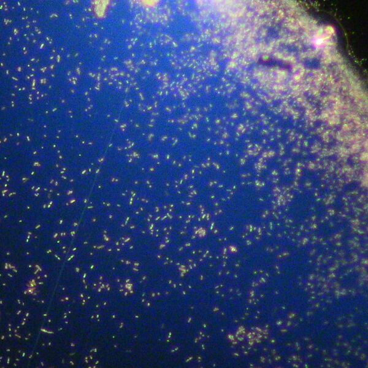
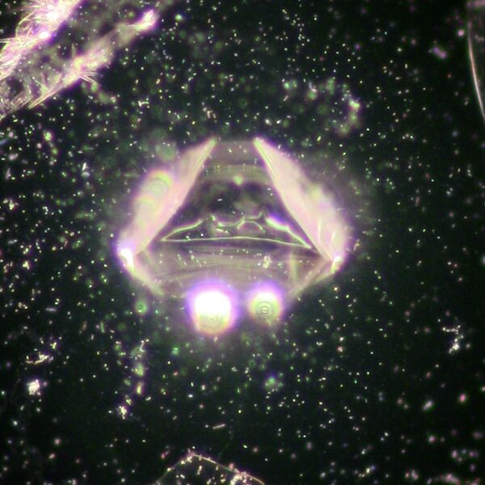
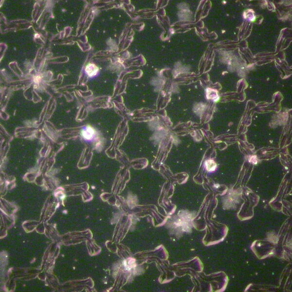

Explorations
How the unseen becomes visible.

Exploring Water
Water enters us, arises within us, and moves through us.

Geometry as a Visual Language
Nature is full of geometry: spirals, circles, branching networks and radial forms.

Intention, Consciousness and Geometry
Consciousness itself becomes part of the question.